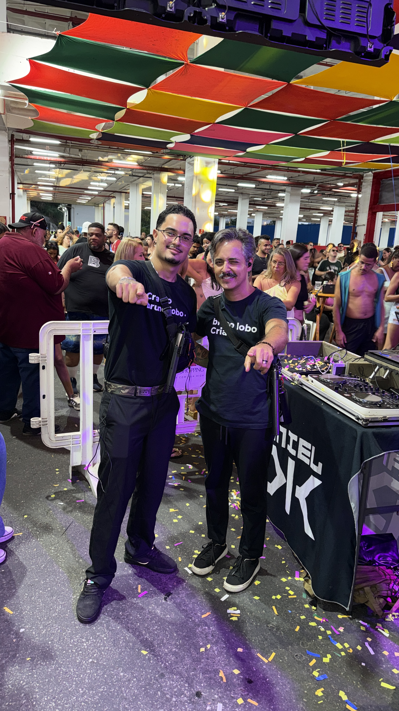
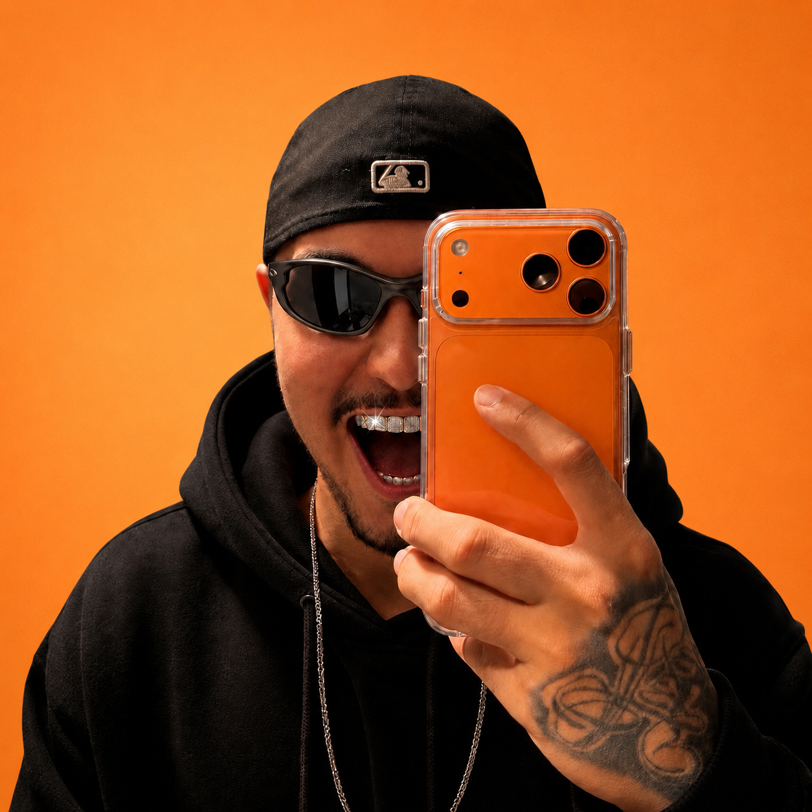
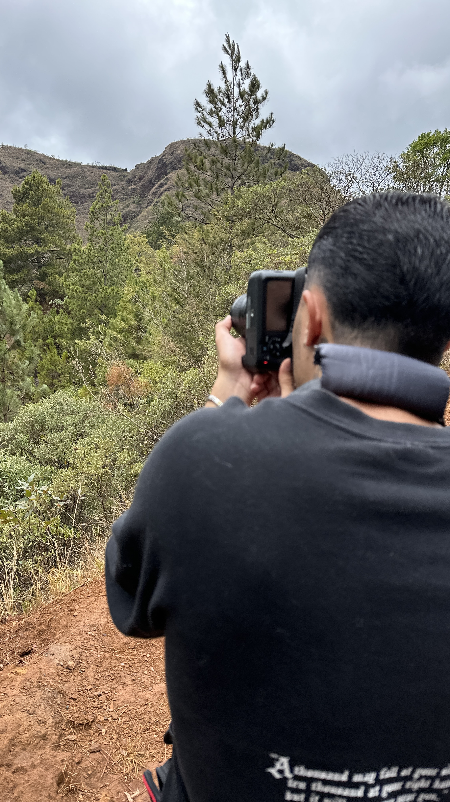

Videomaker urbano / filmes para marca / reels
Isac.Productions
Captação, direção e edição com energia de rua, luz quente e acabamento de campanha. Filmes curtos, fotos fortes e narrativas que seguram o olhar.

4K
Reels, eventos e marcas
Direção
Edição
Color grading
Social cuts
Portfolio visual
Frames que parecem ter som.
Uma vitrine com linguagem de videoclipe, evento e campanha digital. Clique em qualquer mídia para abrir em tela cheia e sentir melhor o ritmo do trabalho.



Globo interativo
Arraste para girar o mundo visual do Isac.
Fotos, vídeos e recortes orbitam em uma esfera viva. O globo gira sozinho, mas responde ao mouse, toque e teclado para uma experiência de portfólio mais memorável.
Vídeo
Street Cut
Reels verticais / 18s
Direção criativa
Do briefing ao corte final, com estética consistente.
O site foi pensado para um videomaker que precisa vender imagem antes de vender texto: poucos blocos, muito contraste, movimento controlado e CTAs claros para transformar curiosidade em orçamento.
01
Filmes para redes
Reels, teasers, cortes verticais e peças rápidas para campanhas.
02
Eventos e bastidores
Captação dinâmica, narrativa de momento e entrega com ritmo.
03
Fotos de impacto
Retratos, lifestyle, produto e frames para fortalecer presença digital.
Contato